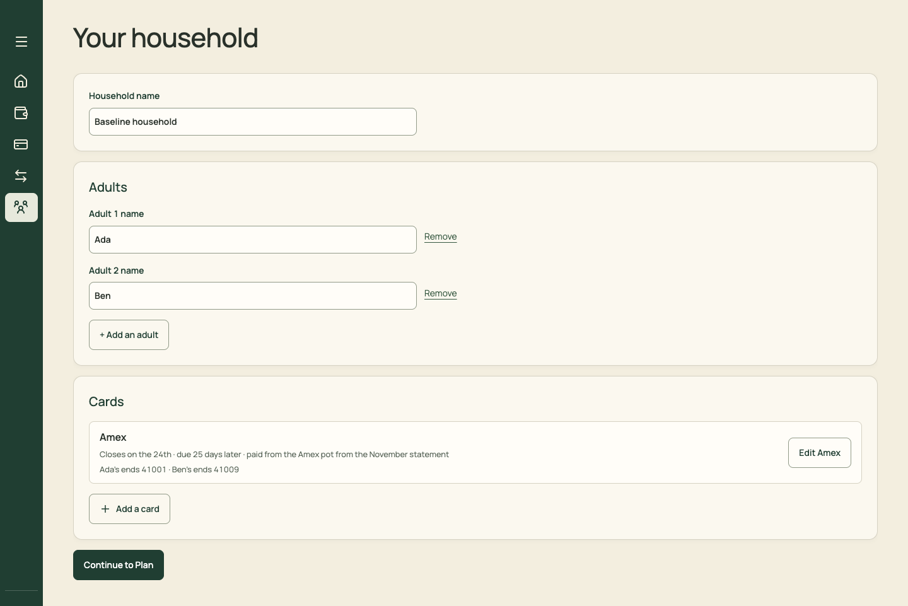
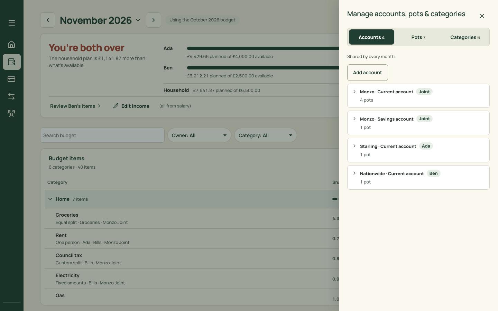

Settings: one place for everything that rarely changes
Household names and cards (on the Household tab today), income (Plan ⋯ › Edit income), accounts, pots, categories and pot spending settings (Plan ⋯ › Manage) and sorting rules (a Spending tab) all move to one Settings page. Each section is a list with editors that open in the shared sheet. Fixes F08. Briefs: PR 08, PR 09.
Desktop · Settings › Accounts & pots
Before: Household is a primary tab with "Continue to Plan". Accounts, pots and categories are a side panel launched from Plan's ⋯, and pot spending settings are two levels inside it. After: Settings, with a section list on the left. Pots sit under their account, and each row shows the settings that matter ("carries over", "pace").
Before · Household

Before · Manage

After
Settings
Accounts & pots
Add account
Shared by every month.
Monzo Joint
Monzo · Current account · Joint
4 pots
Bills
Carries over · build-up flag 2×
£1,240.00 in Monzo
Groceries
Monthly · shows pace
£609.75 in Monzo
Holidays
Monthly
Amex
Set-aside pot · pays Amex from the November statement
£312.85
Monzo Joint Savings
Monzo · Savings account · Joint
1 pot
Emergency
Monthly · no pace
Starling Ada
Starling · Current account · Ada
1 pot
Spending
Monthly · shows pace
Nationwide Ben
Nationwide · Current account · Ben
1 pot
Each row opens its editor in the shared sheet: today's forms (AccountFields, the pot fields, CardSettings) re-hosted, not rewritten.
Pay & income is today's IncomeDialog content as a page section. Plan keeps an "Edit income" link that deep-links here.
On phones, Settings is a list of these sections, reached from the account button.